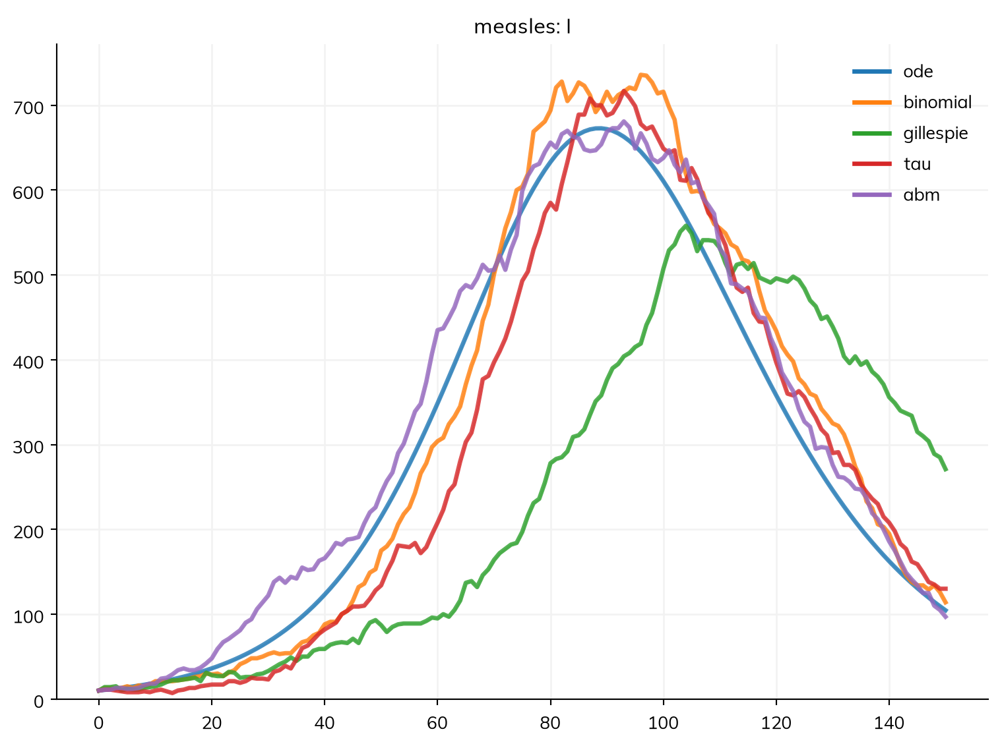
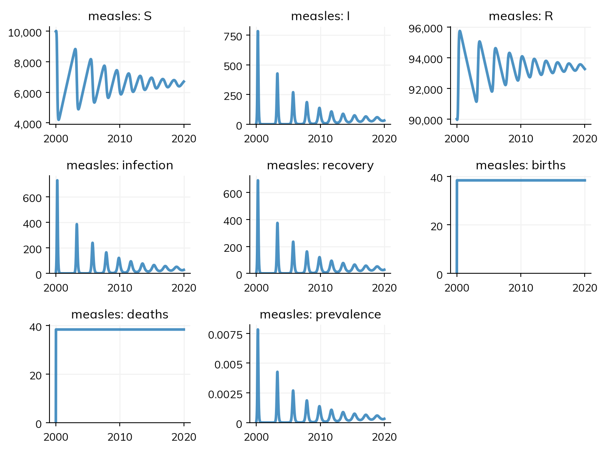
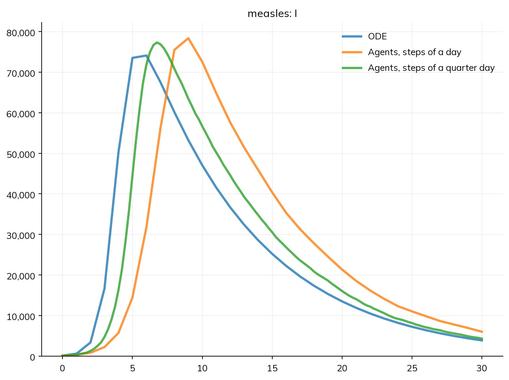

A model in Starsim says what the compartments are, how people move between them, and at what rates. A solver is the method that turns this into numbers over time. The same model can be solved in six ways, and for most models and questions they give the same answer, so Starsim chooses one for you. This page is about the cases where the choice matters: small numbers of people, outbreaks that die out by chance, steps that are too long for the rates, and contacts between particular people. It ends with speed, and the compiled code (the backends) that runs each solver. How the solvers work inside, and how they are tested against each other, is in Solvers and backends in the architecture section.
The solvers
Solver
What it computes
Use it for
'ode'
The expected course of the epidemic, as a set of ordinary differential equations: compartments hold fractions of people, and the result is the same on every run
Large populations, comparing scenarios on average, fitting to data, gradients
'ide'
As 'ode', with each dwell time as it is rather than as Erlang stages (an integro-differential model)
Whole people moving between compartments at random, a step at a time (a chain-binomial model)
Simple stochastic runs, and models that are defined in discrete time
'gillespie'
Whole people moving one at a time, at random times (Gillespie’s exact stochastic simulation algorithm)
Small populations, chance of extinction, exact stochastic dynamics
'tau'
As Gillespie, but taking many events at once (tau-leaping), which is close to exact and much faster when there are many events
Large stochastic runs
'abm'
Individual agents, each with their own state, age, and contacts
Networks, differences between individuals, histories (who infected whom, time since infection)
The first five are compartmental: they only know how many people are in each compartment (or group, if the model is stratified). Agents know who each person is. Any of them can also run the model as a branching process, with depletion turned off (branching=True; see Branching and rescaling).
How Starsim chooses
By default (solver='auto'), a model runs as an ODE if every part of it can be written as compartments, and as agents if anything in it needs individuals: a contact network, n_agents=, or a module written as code (other than an analyzer). 'auto' never chooses a stochastic compartmental solver; ask for one by name.
Here is a measles outbreak in a town of 100,000 people. Measles has a basic reproduction number R0 of about 15 (β = 1.9 per day, infectious for 8 days), but in this town 90% of people are already immune, so at the start each case infects about 15 × 0.1 = 1.5 others:
import starsim as ssS, I, R = ss.states('S I R')infection = S >> I @1.9*I # β = 1.9 per dayrecovery = I >> R @ ss.days(8) # Infectious for 8 days on averagemeasles = ss.Disease(infection, recovery, init=dict(R=0.9), init_n=dict(I=10)) # 90% immune, 10 infectioussim = ss.Sim(measles, total_pop=100_000, stop=ss.days(150))sim.run();
Sim: measles, 100,000 people, as an ODE, days 0 to 150
measles: R0 = 15.2 (R = 1.52 at the start, with 10% susceptible), with 10 infectious at the start
Done in 0.0026 s; measles: 5,781 infections; at most 673 infectious, on day 89
The first line of the output says what ran and how: here, as an ODE. The second gives R0, 15.2, and the reproduction number at the start, R = 1.52, the number of people each case infects at the start, which is R0 times the share susceptible. sim.describe() shows the same choice and the reason for it, before anything runs. To use another solver, give solver= to the sim, or to run():
sim = ss.Sim(measles, total_pop=100_000, stop=ss.days(150), solver='gillespie')sim.run(solver='abm') # Runs the same sim again, as agents
The same outbreak five ways
For a large population and a model with nothing individual in it, the solvers agree. Here is the outbreak above with each one, run side by side with ss.parallel(), which takes a dict of sims by label:
sims = {}for solver in ['ode', 'binomial', 'gillespie', 'tau', 'abm']: sims[solver] = ss.Sim(measles, total_pop=100_000, stop=ss.days(150), solver=solver)sims['abm'] = sims['abm'].new(n_agents=100_000) # One agent per person: see belowmsim = ss.parallel(sims)msim.plot('measles.I')
MultiSim: 5 runs of 5 scenarios (ode, binomial, gillespie, tau, abm)
Done in 0.52 s

The agents are given n_agents=100_000, one per person. By default a sim has 10,000 agents, so here each would stand for 10 people, and the 10 infectious people at the start would be a single agent: an outbreak started by one case, which dies out two times in three (below). When a model’s start is a few people, keep agents at one per person, at least at the start; see Branching and rescaling.
The table gives each result over the whole run: the total of each flow (measles_infection is the number of infections) and the final value of each state:
msim.summarize()
value
result
scenario
measles_S
ode
4209.257333
binomial
3990.000000
gillespie
5145.000000
tau
4357.000000
abm
4262.000000
measles_I
ode
104.569205
binomial
114.000000
gillespie
271.000000
tau
130.000000
abm
97.000000
measles_R
ode
95686.173461
binomial
95896.000000
gillespie
94584.000000
tau
95513.000000
abm
95641.000000
measles_infection
ode
5780.742667
binomial
6000.000000
gillespie
4845.000000
tau
5633.000000
abm
5728.000000
measles_recovery
ode
5686.173461
binomial
5896.000000
gillespie
4584.000000
tau
5513.000000
abm
5641.000000
measles_prevalence
ode
0.003016
binomial
0.003196
gillespie
0.002382
tau
0.002888
abm
0.003290
alive
ode
100000.000000
binomial
100000.000000
gillespie
100000.000000
tau
100000.000000
abm
100000.000000
died
ode
0.000000
binomial
0.000000
gillespie
0.000000
tau
0.000000
abm
0.000000
emigrated
ode
0.000000
binomial
0.000000
gillespie
0.000000
tau
0.000000
abm
0.000000
female
abm
49922.000000
The classic final-size equation for an SIR model says that a share z of the susceptible people are infected in the end, where z = 1 − exp(−1.5 z): z = 0.58, or about 5,800 of the 10,000 who are susceptible. The ODE is close to that (it is not quite over by day 150), and so are the stochastic runs: the chain binomial, tau-leaping, and agents within a few hundred, and the Gillespie run lower, since its outbreak happened by chance to take off later and is further from over by day 150. Each stochastic run is one draw from many possible outbreaks, so a single run of one is not a better or worse answer than the ODE: to compare them properly, run the stochastic solvers many times (see Scenarios).
When they disagree
Whether an outbreak takes off
The ODE follows fractions of people, so an outbreak that starts with one infectious person always takes off if R > 1. In reality, that person may recover before infecting anyone, or the first few chains of transmission may end by chance. With one infectious person at the start, the ODE says what it cannot show:
Sim: measles, 100,000 people, as an ODE, days 0 to 150
measles: R0 = 15.2 (R = 1.52 at the start, with 10% susceptible), with 1 infectious at the start
Note: "measles" starts with 1 infected, so whether it takes off is a matter of chance, which solver="ode" does not show; solver="gillespie" with ss.parallel(n_runs=...) does
Done in 0.0092 s; measles: 5,028 infections; at most 667 infectious, on day 124
The note suggests running it many times with a stochastic solver. Here it is run 200 times with Gillespie’s algorithm, and every run is plotted (lines=True):
Most runs show nothing: the outbreak died out. Counting the runs with fewer than 100 infections:
totals = msim.results.measles.infection.summarize() # The total infections of each runprint('Runs that died out:', sum(totals <100), 'of', len(totals))
Runs that died out: 140 of 200
Branching-process theory says that an outbreak started by one case dies out with a probability of 1/R = 1/1.52 = 0.66 (for an infectious period that is exponentially distributed, as here). The share of runs that died out is close to that. The runs that took off are each close to the ODE, but later or earlier by chance.
So for a question such as “what is the chance that an imported case starts an outbreak?”, or for the uncertainty in when an outbreak peaks, use a stochastic solver and many runs. The ODE answers a different question: how large and when, on average, if it takes off.
Fade-out between epidemics
Over longer periods, the ODE can carry an infection through a trough in which fewer than one person is infectious, after which it grows again. A stochastic model can’t: when the last infectious person recovers, the infection is gone until it is introduced again. This is why, for measles, small populations see epidemics that end and need new introductions, while large ones keep the infection going (the critical community size).
Here is the same town over 20 years, with births and deaths (20 per 1,000 people a year), which bring in new susceptible children. Since the births and deaths are per year, the rates in the disease are given as typed values (ss.perday(1.9)), so that each has its own unit:
S, I, R = ss.states('S I R')infection = S >> I @ ss.perday(1.9)*Irecovery = I >> R @ ss.days(8)measles = ss.Disease(infection, recovery, init=dict(R=0.9), init_n=dict(I=10))demographics = [ss.birth(rate=ss.peryear(0.02)), ss.death(rate=ss.peryear(0.02))]town = ss.Sim(measles, demographics=demographics, total_pop=100_000, start='2000-01-01', stop='2020-01-01', dt=ss.weeks(1))town.run()town.plot('measles')
Sim: measles, 100,000 people, as an ODE, 2000-01-01 to 2019-12-28 (the last whole step before 2020-01-01)
measles: R0 = 15.2 (R = 1.52 at the start, with 10% susceptible), with 10 infectious at the start
Note: the number infected in "measles" falls to 0.82 (at 2000-09-23) and then rises to 427; a stochastic run would usually die out there. solver="gillespie" with ss.parallel(n_runs=...) shows how often, in the runs of msim.results.measles.I after that point
Done in 0.0036 s; measles: 40,655 infections; at most 783 infectious, on 2000-03-25

The ODE has a first epidemic, a trough in which the number infectious falls below one (which it notes), and then recurring epidemics as susceptible children accumulate, about 40,000 infections in all. Run with tau-leaping, eight times:
median 6705.000000
low 6563.675000
high 6974.650000
mean 6735.000000
std 150.399468
Name: measles_infection, dtype: float64
In every stochastic run, measles dies out after the first epidemic, with about 6,700 infections in all: a sixth of the ODE’s. Neither is wrong as a model, but only the stochastic one represents a town in which measles can disappear, and the difference is the whole answer to a question about long-term burden. Where fade-out matters, use a stochastic solver, or add introductions from outside (see Geography).
The length of a step
The ODE takes as many small steps inside each time step as it needs, and Gillespie and tau-leaping work in continuous time, so for these the step only says when results are recorded. Agents, and the chain binomial with substeps=1, take each step whole: everyone’s chance of moving is worked out at the start of the step, and someone infected during a step can’t infect anyone until the next one. When rates are fast compared with the step, this slows the epidemic down. By default the chain binomial splits each step into enough substeps to keep this bias small: no more than about 5% of a compartment leaves it in a substep, and fewer near the epidemic threshold (R0 close to 1), where a small bias in R moves the prevalence a lot. A probability of 1 over a period (e.g. ss.probperyear(1)) moves everyone in the step: as agents, within it, and in compartments, the whole compartment at the start of each step or substep.
Measles in a town with no immunity is such a case: with β = 1.9 per day, the number infected can double in less than half a day. Here it is as an ODE, and as agents with steps of one day and of a quarter of a day:
S, I, R = ss.states('S I R')infection = S >> I @1.9*Irecovery = I >> R @ ss.days(8)measles = ss.Disease(infection, recovery, init_prev=0.001)ode = ss.Sim(measles, total_pop=100_000, stop=ss.days(30), label='ODE').run()daily = ss.Sim(measles, total_pop=100_000, stop=ss.days(30), solver='abm', label='Agents, steps of a day').run()quarter = ss.Sim(measles, total_pop=100_000, stop=ss.days(30), solver='abm', dt=ss.days(0.25), label='Agents, steps of a quarter day').run()
Sim "ODE": measles, 100,000 people, as an ODE, days 0 to 30
measles: R0 = 15.2, with 100 infectious at the start
Done in 0.0019 s; measles: 99,900 infections; at most 74,112 infectious, on day 6
Sim "Agents, steps of a day": measles, as 10,000 agents, each 10 people, days 0 to 30
Note: consider a shorter step (e.g. dt=ss.days(0.25)): each step is 1 day, and infection transmits at up to 1.9 per day (with everyone infectious), 85% in a step (and I is fast too). Taking whole steps, agents may differ from the ODE by an amount of that order; sim.check_dt() shows how much it matters
Done in 0.028 s; measles: 99,900 infections; at most 78,380 infectious, on day 9
Sim "Agents, steps of a quarter day": measles, as 10,000 agents, each 10 people, days 0 to 30
Note: consider a shorter step (e.g. dt=ss.days(0.062)): each step is 0.25 days, and infection transmits at up to 1.9 per day (with everyone infectious), 38% in a step. Taking whole steps, agents may differ from the ODE by an amount of that order; sim.check_dt() shows how much it matters
Done in 0.061 s; measles: 99,900 infections; at most 77,320 infectious, on day 6.75
MultiSim: 3 runs of 3 scenarios (ODE, Agents, steps of a day, Agents, steps of a quarter day)
Done in 0.33 s

The sims have different steps, so each is plotted against its own time points; what needs their results put together as runs of one thing, such as the median across runs, raises an error saying so.
The ODE peaks on day 6, and agents with steps of a quarter of a day within a day of it; agents with daily steps peak three days later, and higher. The agents’ run notes the size of the step, and sim.check_dt() runs the sim again with half the step and shows how much each result changes:
daily.check_dt()
Change in each result when the timestep goes from 1 to 0.5 days (largest difference, as a share of the largest value):
measles.infection 57.3% (peak 27610 → 33830)
measles.recovery 51.4% (peak 8600 → 9400)
measles.prevalence 35.8% (peak 0.7838 → 0.7675)
measles.I 35.8% (peak 78380 → 76750)
measles.S 30.6% (peak 99900 → 99900)
measles.R 14.0% (peak 94000 → 95270)
A result that changes by more than a few percent when the step is halved depends on the step, and the step should be smaller. The shorter the generation time of an infection compared with the step, the more this matters: measles is extreme, and for an infection with rates of a few percent per step (as for most models with daily steps and durations of weeks), the step makes little difference. See Time for how to set the step.
A state’s count is recorded at the end of each step, so as agents it includes the people infected in that step, who can’t infect anyone until the next one. At a coarse step, a stock therefore reads a little high compared with the ODE, even at equilibrium: an SIS with R0 = 1.25 and 5 days infectious settles at 21.4% infectious with daily steps, against 20% for the ODE, of whom 18.1% are transmitting during a step. The difference shrinks in proportion to the step (20.5% with steps of a quarter of a day), and the average over a step of the number infectious is close to the ODE’s (19.8% with daily steps).
A threshold on a clock acts at the step boundaries, since the clock is read once a step. A rate that applies until 13 weeks of pregnancy (where=preg.P.time < ss.weeks(13)), on monthly steps, applies while the clock reads 0, 1, and 2 months, and someone who arrives during a step spends on average half of it at 0: so it applies for about 2.5 of the 3 months it should, and the event it governs happens less often than the inputs imply (11.9% of pregnancies miscarry against 14.1%, in FPsim’s case). sim.check_dt() shows it, and a shorter step reduces it.
Contacts between particular people
A compartmental model assumes that everyone in a group mixes with everyone else in it at random. A contact network, in which each person has a few fixed contacts, breaks this: once someone’s contacts are infected or immune, they have nobody left to infect, so the epidemic grows more slowly and infects fewer people than random mixing at the same number of contacts. A network needs agents; with solver='ode', Starsim replaces it with random mixing at the network’s mean number of contacts, and notes that it has done so.
Measles spreads so readily that nearly everyone is infected either way, so this example uses a less transmissible infection, with β = 0.05 per contact per day and eight contacts each that never change (dynamic=False):
S, I, R = ss.states('S I R')flu = ss.Disease(S >> I @0.05*I, I >> R @ ss.days(8), init_prev=0.001, name='flu')contacts = ss.RandomNet(n_contacts=8, dynamic=False)agents = ss.Sim(flu, networks=contacts, n_agents=10_000, stop=ss.days(150), dt=ss.days(0.5)).run()mixing = ss.Sim(flu, networks=contacts, total_pop=10_000, stop=ss.days(150), solver='ode').run()
Sim: flu, as 10,000 agents, days 0 to 150
Running as agents: n_agents was given
Done in 0.26 s; flu: 8,745 infections; at most 2,500 infectious, on day 37
Sim: flu, 10,000 people, as an ODE, days 0 to 150
flu: R0 = 3.2, with 10 infectious at the start
Note: RandomNet approximated by homogeneous mixing with 8 contacts per day (its mean number of contacts)
Done in 0.0016 s; flu: 9,516 infections; at most 3,241 infectious, on day 28
With random mixing (the ODE), R0 = 0.05 × 8 × 8 = 3.2; on the fixed network, the epidemic peaks later and lower, and fewer people are infected. If the structure of contacts is part of the question (partnerships, households, contact tracing), use agents; if only the average number of contacts matters, compartments are enough. approx=False makes any such approximation an error instead of a note.
Speed
The compartmental solvers don’t slow down with the size of the population, except Gillespie, which takes one event at a time. A million people, as a chain binomial, tau-leaping, and Gillespie:
for solver in ['binomial', 'tau', 'gillespie']: ss.Sim(measles, total_pop=1_000_000, stop=ss.days(50), solver=solver).run()
Sim: measles, 1,000,000 people, as a stochastic compartmental model (chain binomial), days 0 to 50
measles: R0 = 15.2, with 1,000 infectious at the start
Done in 0.0013 s; measles: 999,000 infections; at most 760,234 infectious, on day 7
Sim: measles, 1,000,000 people, as a stochastic compartmental model (tau-leaping), days 0 to 50
measles: R0 = 15.2, with 1,000 infectious at the start
Done in 0.002 s; measles: 999,000 infections; at most 758,106 infectious, on day 6
Sim: measles, 1,000,000 people, as a stochastic compartmental model (Gillespie), days 0 to 50
measles: R0 = 15.2, with 1,000 infectious at the start
Done in 0.13 s; measles: 999,000 infections; at most 741,375 infectious, on day 6
Each says how long it took. Gillespie handled about two million events here in well under a second; with tens of millions of events, use tau-leaping. Agents take time in proportion to the number of agents and the number of steps; a population larger than the number of agents is represented by having each agent stand for several people (see Branching and rescaling).
Backends
Whichever solver is chosen, the numbers are worked out by compiled code rather than by Python, which is why a compartmental run of a million people takes milliseconds. Starsim has three engines, and chooses among them itself; none changes the results, so most users never need this section, except to know why the first run after installing Starsim can be slow.
The kernels are compiled loops: they run compartmental models step by step, the passes over the agents (who is infected, who recovers), and the random draws. There are two copies that give the same numbers bit for bit: one in Numba, which is compiled on first use after installing Starsim (a few minutes, once; it is then kept on disk), and one in Rust, compiled ahead of time and included in the wheels that pip install starsim gets on Linux, macOS, and Windows (from a clone, build it with cd starsim/solvers/rust && ./build). ss.options.kernels chooses: 'auto' (the default) uses Rust if it is there and Numba otherwise, running short compartmental runs as plain Python while Numba has not yet compiled; 'rust' and 'numba' ask for one; 'python' runs the compartmental kernels as plain Python, which is slow but easy to step through in a debugger.
JAX takes a whole run of the ODE when the run is long enough to repay starting JAX (about half a second, once a session): many groups, many steps, or many runs. The choice is made from the size of the model, never from timing, and an ODE run in JAX agrees with the kernels to rounding. Setting sim.jax = True or False before the run forces it either way. JAX is also what computes gradients.
Plain Python and NumPy run the rest: the step loop of agent-based runs, and modules written as code. Your own loops in a module can be compiled with @ss.jit (see Custom modules).
To compile everything at once rather than on first use, run ss.compile() (or starsim compile from the command line): once after installing, when building a Docker image, in continuous integration, or before a long batch of runs on a cluster, so that no run waits for it (see Deployment). With verbose=2, a run says which engine took it and why (e.g. “engine: kernels: a short run, shorter than JAX takes to start”), and why a compartmental run was taken step by step rather than in one call (an intervention that needs its own step, for example).
Two settings of the sim change the numerical method itself rather than the engine. integrator= is the ODE’s scheme: 'rk4' (fourth-order Runge–Kutta, the default) or 'euler'. substeps= is the number of substeps in each time step, for the ODE and the chain binomial; by default there are enough that no compartment turns over by more than a small share in one, and substeps=1 takes each step whole, as discrete-time chain-binomial models in the literature do.
Which to use
If the question is about
Use
The expected course of an epidemic in a large population
The chance that an outbreak takes off or dies out, or the spread of possible outbreaks
'gillespie' (or 'tau' for large populations), with many runs
The same for one introduction into a large population, or chains of who infected whom
branching=True, with 'gillespie', or 'abm' for chains, and until= to stop the runs that take off (Branching and rescaling)
A model written in discrete time, such as a chain-binomial model from the literature
'binomial' with substeps=1
Networks, contact tracing, individual histories, or differences between people that groups can’t hold
'abm' (chosen for you when the model has them)
Pitfalls
One stochastic run is not a result. Compare a stochastic solver with the ODE over many runs, not one.
A long step changes agents and the chain binomial. When the sim notes that many people leave a state in one step, check with sim.check_dt(), and shorten the step if the results change.
An ODE with fewer than one person infected. The ODE notes when the number infected falls below one and then rises again; a stochastic model would usually die out there.
Approximations under 'ode'. A network, or anything else that needs agents, is replaced by its standard compartmental form when you ask for 'ode', with a note; read the notes (they are also kept in sim.notes).